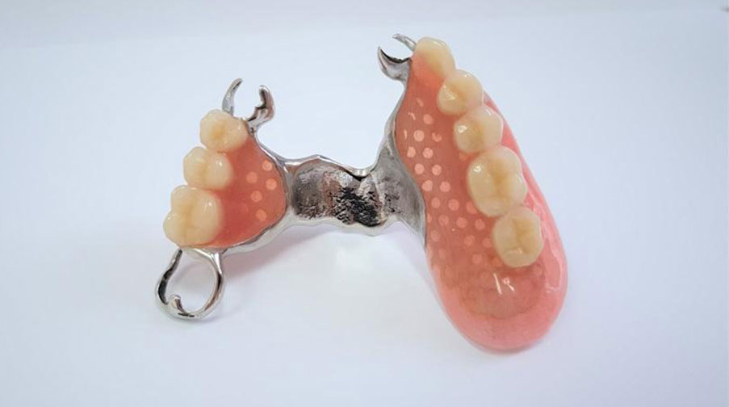

Dantų Protezavimas | Tobulesni dantų protezai | Kaina | Vilnius
 Toggle navigation Pagrindinis Paslaugos Vaikų dantų gydymas Dantų kanalų gydymas Dantų protezavimas Dantų implantavimas Estetinis dantų plombavimas Dantų balinimas Profesionali burnos higiena Protinių dantų rovimas Apie mus Kainos Kontaktai Registruotis vizituiDantų protezavimas
Turinys
Dantų protezavimas Dantų protezavimo kaina Išimami dantų protezai Dantų protezų plokštelės Fiksuoti dantu protezai Tobulesni dantų protezai
Šiandieninės technologijos žengia itin sparčiai į priekį ir pažeria mums vis daugiau galimybių įvairiose gyvenimo srityse. Ne išimtis – odontologija. Šiandien galime džiaugtis galimybe protezuoti dantis ir turėti tobulą šypseną.
Dantų protezavimas yra procedūra, kurią atliekant atkuriami danties audiniai. Paprastai dantų protezavimą rekomenduojame pacientams, kurių dantys yra stipriai pažeisti ar praradę estetinę išvaizdą. Išimami protezai tiks tiems, kurie prarado vieną, kelis ar net didelę dalį dantų. Pažangios technologijos lemia, kad šiandien protezavimo procedūros atliekamos pacientui nejaučiant visiškai jokio diskomforto, gana sparčiai ir sklandžiai. „Videnta“ komanda – tai profesionalūs odontologai, besispecializuojantys skirtingose odontologijos srityse, tad galime pasiūlyti klientams platų paslaugų spektrą. Dantų protezuotojai nuolat tobulina savo žinias, praktinius įgūdžius ir užtikrina aukščiausios kokybės dantų protezavimo paslaugas.
Registruotis vizitui dabar
Dantų protezavimo kaina
Dantų protezavimo kaina yra investicija į Jūsų tobulą šypseną, pasitikėjimą savimi ir gyvenimo kokybę. Paslaugos kainai įtakos turi keli aspektai, pavyzdžiui, koks danties pažeidimas, kiek išlikusio natūralaus danties audinio, koks dantų protezavimo būdas pasirenkamas ir pan.
Jei turite daugiau klausimų apie procedūrą ar nežinote, koks protezavimo būdas Jums tinkamiausias, laukiame Jūsų skambučių ar el. laiškų.
Dantų protezavimo kainos:
Paslauga
Kaina (Eur)
Dantų protezavimas metalo keramikos vainikėliu
155–190
Metalo keramikos vainikėlis ant implanto
300
Dantų protezavimas cirkonio oksido vainikėliu
190
Dantų protezavimas cirkonio oksido vainikėliu su keramine apdaila
380
Cirkonio oksido vainikėlis ant implanto
450
Išimamų dantų protezų kaina
Nuo 220
Tobulesni išimami dantų protezai
450
Registruotis vizitui dabar
Išimami dantų protezai
Nors odontologija sparčiai tobulėja ir rinkoje atsiranda naujų, pažangių protezų, visgi išimami dantų protezai dar yra populiarūs ir tampa dažnu pasirinkimu. Šio tipo protezai nekelia didelio diskomforto, patikimai laikosi (efektyvumui padidinti siūlome naudoti specialius klijus), nesunkiai prižiūrimi. Nakčiai išimami dantų protezai turėtų būti laikomi specialiame skystyje, neutralizuojančiame per dieną susikaupusias bakterijas ir nešvarumus.
Daliniai arba pilni išimami dantų protezai puikiai palaiko žandikaulio funkciją, leidžia kramtyti maistą ir jaustis taip, tarytum turėtumėte sveikus savus dantis.
Išimami dantų protezai – kaina, kurią sumokate už plačią ir dailią šypseną, gyvenimo džiaugsmą. Turėdami gražius dantis Jūs vėl galėsite nevaržomai šypsotis, dalyvauti socialiniame gyvenime, nesigėdyti savo šypsenos ir džiaugtis bendravimu su kitais.
Dantų protezų plokštelės
Jei praradote visus ar didelę dalį dantų, tiesiog būtina juos vienu ar kitų būdu atkurti, siekiant sugrąžinti prarastą pasitikėjimą savimi, puikią išvaizdą, estetiką ir, žinoma, žandikaulio sąnario funkciją bei kramtymo efektyvumą. Vienas geriausių pasirinkimų – dantų protezų plokštelės . Tai idealus sprendimas, jei dar yra likę natūralių dantų, už kurių užkabintas ir užraktais pritvirtintas lanko atraminis protezas burnoje nejudės, nebus juntamas joks diskomfortas. Dantų protezų plokštelės atrodo estetiškai, jos patogios ir funkcionalios.
Fiksuoti dantų protezai
Fiksuoti dantų protezai, dažnai pavadinami vainikėliais, užklotais ir kt., puikiai tinka, jei yra likę natūralaus danties audinio. Toks protezavimo būdas garantuoja efektyvesnę kramtymo funkciją, taip pat tokių protezų priežiūra nereikalauja papildomo laiko (juos valysite it natūralius dantis ), o estetiška, natūrali išvaizda ir patogumas yra vieni didesnių privalumų.
Tobulesni dantų protezai
Pasitaiko, kad klientams pasiūlius išimamus dantų protezus jie teiraujasi kitų alternatyvų, kurios būtų dar patogesnės ir pažangesnės. Tokiu atveju siūlome dantų implantus, kurių privalumų sąrašas labai solidus: jų nereikės išimti; implantai stabilūs, todėl nė nejusite, kad tai – ne natūralus Jūsų dantis; galėsite valgyti kokį tik norite maistą; bus idealiai atkurta kandimo, kramtymo ir kitos funkcijos; užtikrins estetišką vaizdą; implantai – investicija visam gyvenimui. Tai dar nebaigtinis tobulesnių dantų protezų privalumų sąrašas, kuriuo gali mėgautis kiekvienas mūsų klientas, pasirinkęs šią paslaugą.
Registruotis vizitui dabar
Kitos paslaugos
Vaikų dantų gydymas Profesionali burnos higiena Dantų kanalų gydymas Dantų protezavimas Dantų implantavimas Estetinis dantų plombavimas Dantų balinimas kapomis Ofisinis dantų balinimas2019 © UAB "Videnta" - Visos teisės saugomos.
×Registruotis vizitui
Po registracijos sulauksite skambučio iš klinikos.
Užsiregistravote sėkmingai. Prašome sulaukti patvirtinimo.Šioje svetainėje yra naudojami slapukai, kad suteiktų jums geriausią naršymo patirtį.
Sužinokite daugiau arba sureguliuokite nustatymus .
SutinkuNorite užsiregistruoti vizitui?
Palikite savo telefono numerį ir su Jumis susisieksime!
Privatumo apžvalga Strictly Necessary Cookies 3rd Party Cookies Pagal GDPR plugin
Privatumo apžvalga
This website uses cookies so that we can provide you with the best user experience possible. Cookie information is stored in your browser and performs functions such as recognising you when you return to our website and helping our team to understand which sections of the website you find most interesting and useful.
Strictly Necessary Cookies
Strictly Necessary Cookie should be enabled at all times so that we can save your preferences for cookie settings.
If you disable this cookie, we will not be able to save your preferences. This means that every time you visit this website you will need to enable or disable cookies again.
3rd Party Cookies
This website uses Google Analytics to collect anonymous information such as the number of visitors to the site, and the most popular pages.
Keeping this cookie enabled helps us to improve our website.
Please enable Strictly Necessary Cookies first so that we can save your preferences!
Įjungti viską Išsaugoti pakeitimus